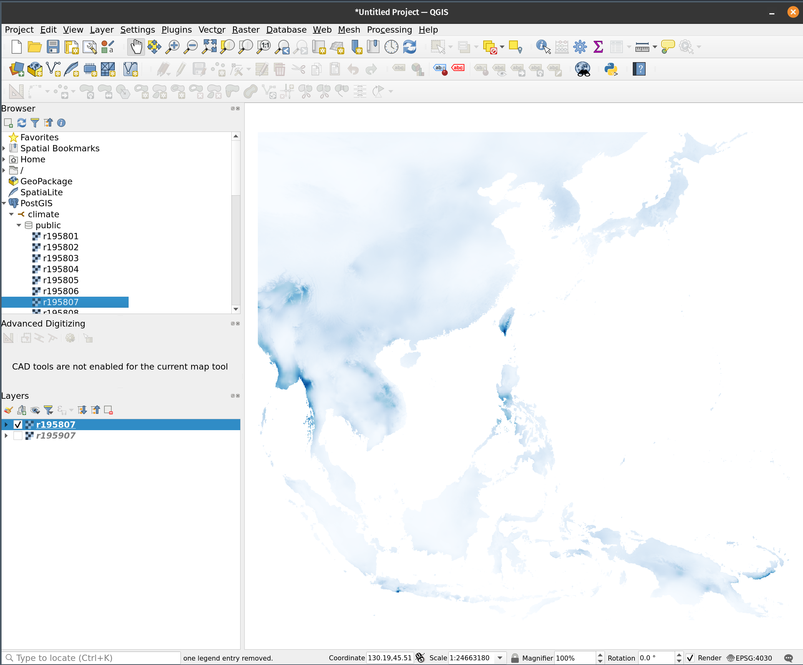

docker compose up -d
docker ps
CONTAINER ID IMAGE COMMAND CREATED STATUS PORTS NAMES
28ce31d499fc tomishing/postgis:17 "docker-entrypoint.s…" 3 hours ago Up 3 hours 0.0.0.0:5432->5432/tcp, [::]:5432->5432/tcp my_postgisDatabase and R
Creating a Database, and Writing and Retrieving Records
While using a database system is not necessary for our analysis, it is helpful to prepare for scenarios where data might need to be shared with other users or integrated with software such as QGIS. For this reason, it is beneficial to construct a system that allows R to access data stored in a database.
Among the available database systems, PostgreSQL-based PostGIS is one of few options that supports handling geographical data. Therefore, after setting up a Dockerized PostGIS instance, I use it to write and retrieve data instead of saving directly files directly to a directory.
The steps in my data analysis workflow are as follows:
- Read NetCDF files into R.
- Crop the necessary data from the original files.
- Write all processed the database.
- Clear all data objects when exiting the analysis.
- Retrieve the necessary data again when resuming the analysis.
Connecting R and PostGIS
Unfortunately, the
odbcpackage failed to connect to the database in my environment, so I use theRPostgrespackage instead.Additionally, the
rpostgispackage does not support.rdsfile format. Therefore, all climate data must be saved as.tifformat in advance.
Procedures
Use a database in Docker
Access to the database, and write objects into the database
library(raster)
library(DBI)
library(RPostgres)
library(rpostgis)
library(R.utils)
# Access to a database
con <- dbConnect(
RPostgres::Postgres(),
dbname = "climate",
user = "postgres",
password = "postgres",
host = "localhost",
port = 5432
)
# Export monthly objects to the database
for (ya in years) {
for (mon in 1:12) {
m <- sprintf("%02d", mon)
pgtablename <- paste0("r", ya, m)
ar_obj <- get(paste0("ar_", ya))
rast <- ar_obj[[mon]]
pgWriteRast(con, c("public", pgtablename),
rast,
overwrite = TRUE
)
}
printf("\n%d is successfully imported.\n", ya)
}Retrieval of data
start_time <- Sys.time()
for (ya in years) {
filename <- paste0("r_", ya)
objects <- raster()
for (mon in 1:12) {
m <- sprintf("%02d", mon)
pgtablename <- paste0("r", ya, m)
object <- brick(pgGetRast(con, pgtablename))
names(object) <- paste0("m", m)
objects <- addLayer(objects, object)
assign(filename, objects)
}
printf("\n%d is successfully imported.\n", ya)
}
end_time <- Sys.time()
time_elapsed <- round(end_time - start_time, 2)
time_elapsed
rm(list = ls(pattern = "^r_")In my environment, it took over 8 minutes to import all precipitation data from PostGIS into R. Given the presence of additional climate datasets, using a database for analysis may not be practical. So far, saving the data to a local disk in RDS or TIFF format has proven more straightforward and convenient. Alternatively, SQL queries within the database can be considered, though they may not be efficient unless the area of interest (AOI) is well defined. However, using the database could be beneficial if your main analysis involves vector data.
Some useful functions
# Database
dbListTables(con) # a list of tables
dbGetQuery(con, "select * from annual_rain") # get the query result
dbSendQuery(con, "drop table if exists annual_rain ")
dbDrop(con, "a_rain") # Drop a table
# PostGIS
pgPostGIS(con) # check if PostgreSQL is enabled the extentions
pgListGeom(con, geog = TRUE) # list vector data table
pgListRast(con) # list raster data table
pgWriteRast(con, c("schema", "testraster"), test)Connecting PostGIS from QGIS
